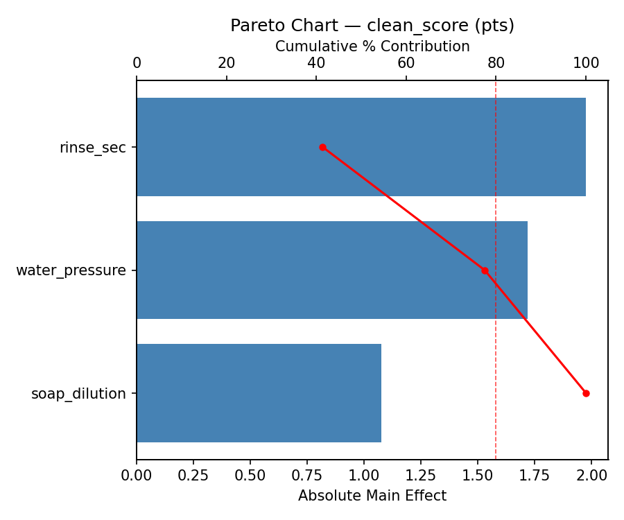
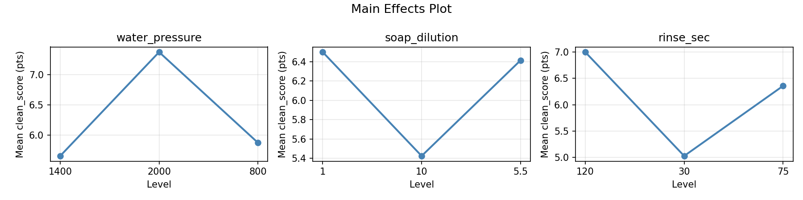
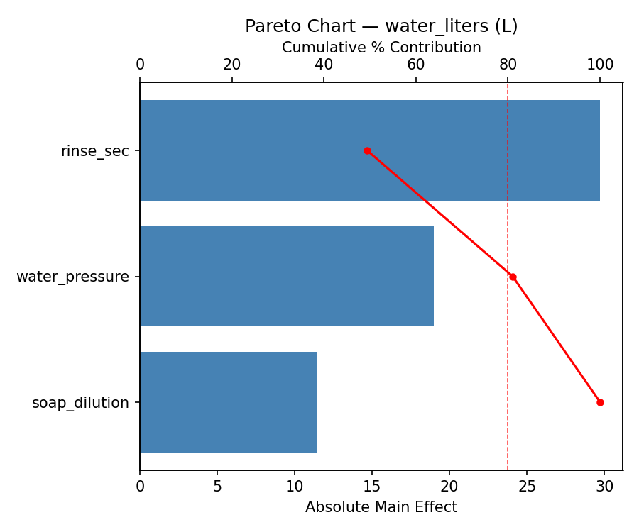
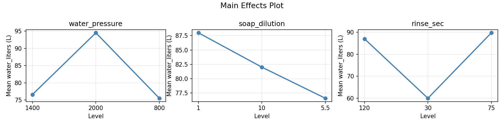
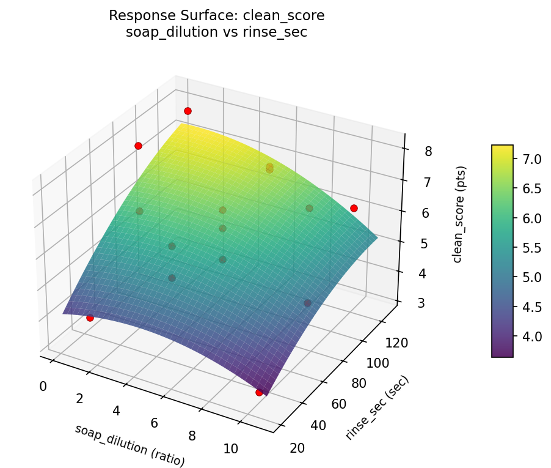
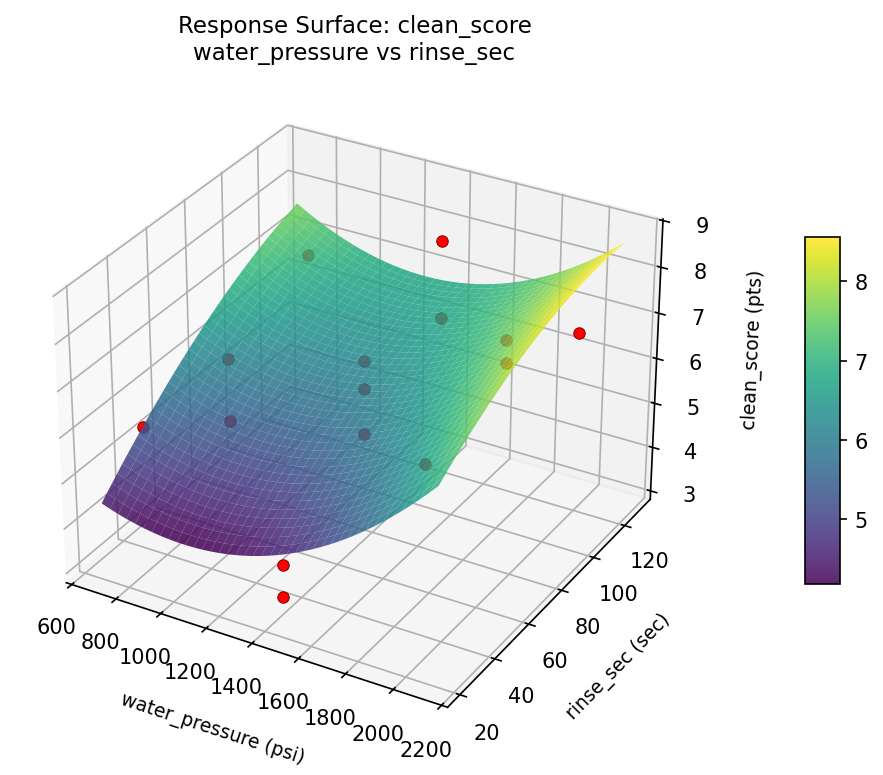
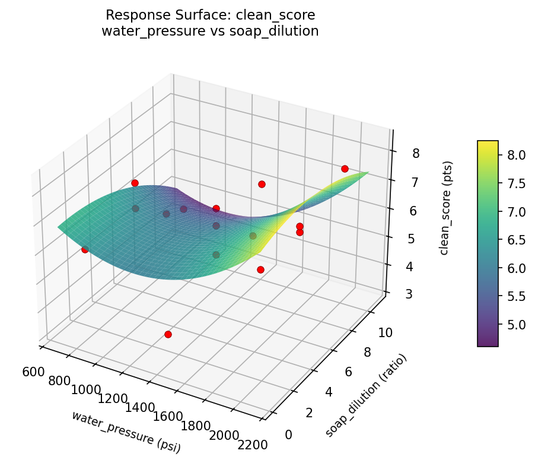
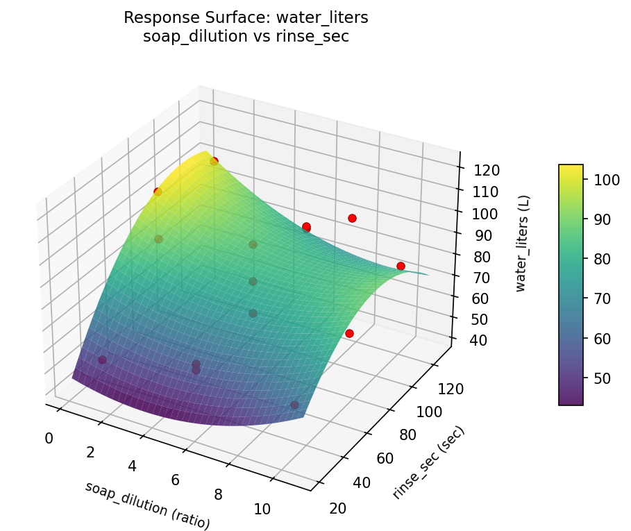
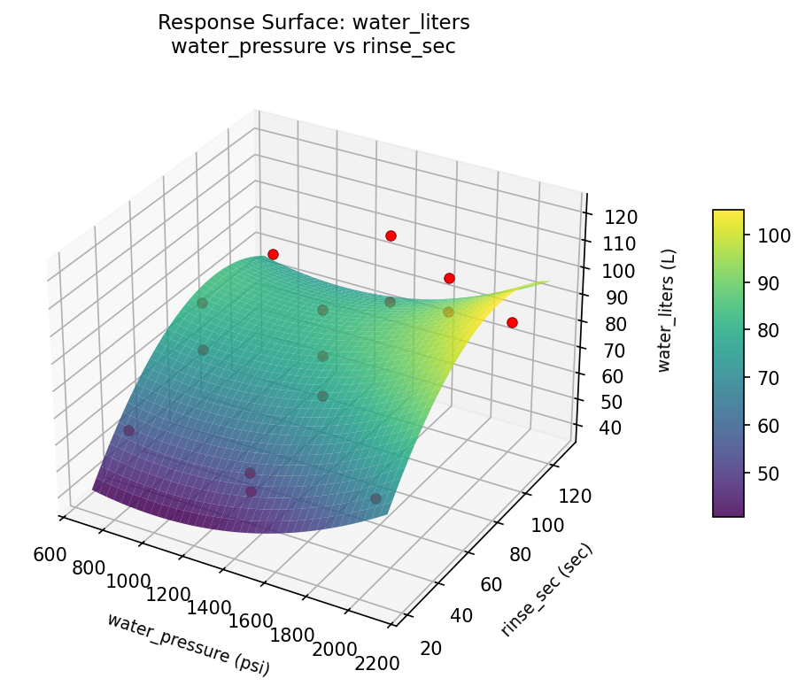
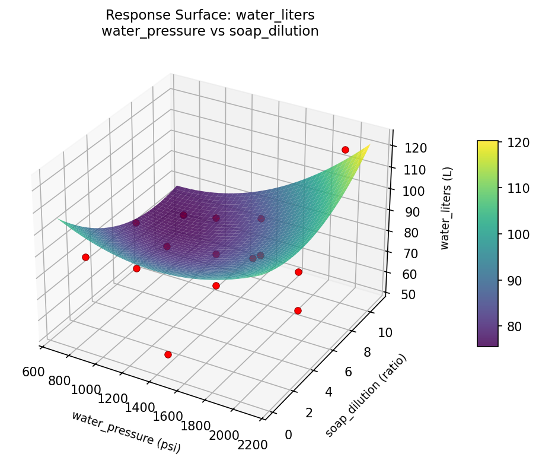

Experimental Setup
Factors
| Factor | Low | High | Unit |
|---|
water_pressure | 800 | 2000 | psi |
soap_dilution | 1 | 10 | ratio |
rinse_sec | 30 | 120 | sec |
Fixed: wash_type = touchless, water_temp = warm
Responses
| Response | Direction | Unit |
|---|
clean_score | ↑ maximize | pts |
water_liters | ↓ minimize | L |
Configuration
{
"metadata": {
"name": "Car Wash Quality Optimization",
"description": "Box-Behnken design to maximize wash quality and minimize water usage by tuning water pressure, soap concentration, and rinse duration"
},
"factors": [
{
"name": "water_pressure",
"levels": [
"800",
"2000"
],
"type": "continuous",
"unit": "psi"
},
{
"name": "soap_dilution",
"levels": [
"1",
"10"
],
"type": "continuous",
"unit": "ratio"
},
{
"name": "rinse_sec",
"levels": [
"30",
"120"
],
"type": "continuous",
"unit": "sec"
}
],
"fixed_factors": {
"wash_type": "touchless",
"water_temp": "warm"
},
"responses": [
{
"name": "clean_score",
"optimize": "maximize",
"unit": "pts"
},
{
"name": "water_liters",
"optimize": "minimize",
"unit": "L"
}
],
"settings": {
"operation": "box_behnken",
"test_script": "use_cases/120_car_wash_quality/sim.sh"
}
}
Experimental Matrix
The Box-Behnken Design produces 15 runs. Each row is one experiment with specific factor settings.
| Run | water_pressure | soap_dilution | rinse_sec |
|---|
| 1 | 1400 | 1 | 30 |
| 2 | 1400 | 5.5 | 75 |
| 3 | 2000 | 5.5 | 120 |
| 4 | 2000 | 5.5 | 30 |
| 5 | 1400 | 5.5 | 75 |
| 6 | 1400 | 5.5 | 75 |
| 7 | 800 | 5.5 | 120 |
| 8 | 2000 | 1 | 75 |
| 9 | 1400 | 1 | 120 |
| 10 | 2000 | 10 | 75 |
| 11 | 800 | 5.5 | 30 |
| 12 | 1400 | 10 | 120 |
| 13 | 800 | 1 | 75 |
| 14 | 800 | 10 | 75 |
| 15 | 1400 | 10 | 30 |
Step-by-Step Workflow
1
Preview the design
$ python doe.py info --config use_cases/120_car_wash_quality/config.json
2
Generate the runner script
$ python doe.py generate --config use_cases/120_car_wash_quality/config.json \
--output use_cases/120_car_wash_quality/results/run.sh --seed 42
3
Execute the experiments
$ bash use_cases/120_car_wash_quality/results/run.sh
4
Analyze results
$ python doe.py analyze --config use_cases/120_car_wash_quality/config.json
5
Get optimization recommendations
$ python doe.py optimize --config use_cases/120_car_wash_quality/config.json
6
Generate the HTML report
$ python doe.py report --config use_cases/120_car_wash_quality/config.json \
--output use_cases/120_car_wash_quality/results/report.html
Features Exercised
| Feature | Value |
|---|
| Design type | box_behnken |
| Factor types | continuous (all 3) |
| Arg style | double-dash |
| Responses | 2 (clean_score ↑, water_liters ↓) |
| Total runs | 15 |
Analysis Results
Generated from actual experiment runs using the DOE Helper Tool.
Response: clean_score
Top factors: rinse_sec (41.4%), water_pressure (36.0%), soap_dilution (22.5%).
Pareto Chart

Main Effects Plot

Response: water_liters
Top factors: rinse_sec (49.4%), water_pressure (31.6%), soap_dilution (19.0%).
Pareto Chart

Main Effects Plot

Response Surface Plots
3D surfaces fitted with quadratic RSM. Red dots are observed data points.
clean score soap dilution vs rinse sec

clean score water pressure vs rinse sec

clean score water pressure vs soap dilution

water liters soap dilution vs rinse sec

water liters water pressure vs rinse sec

water liters water pressure vs soap dilution

Full Analysis Output
RSM surface: rsm_clean_score_water_pressure_vs_soap_dilution.png
RSM surface: rsm_clean_score_water_pressure_vs_rinse_sec.png
RSM surface: rsm_clean_score_soap_dilution_vs_rinse_sec.png
RSM surface: rsm_water_liters_water_pressure_vs_soap_dilution.png
RSM surface: rsm_water_liters_water_pressure_vs_rinse_sec.png
RSM surface: rsm_water_liters_soap_dilution_vs_rinse_sec.png
=== Main Effects: clean_score ===
Factor Effect Std Error % Contribution
--------------------------------------------------------------
rinse_sec 1.9750 0.3690 41.4%
water_pressure 1.7179 0.3690 36.0%
soap_dilution 1.0750 0.3690 22.5%
=== Summary Statistics: clean_score ===
water_pressure:
Level N Mean Std Min Max
------------------------------------------------------------
1400 7 5.6571 1.6752 3.2000 8.0000
2000 4 7.3750 0.5909 6.8000 8.1000
800 4 5.8750 0.9500 4.6000 6.9000
soap_dilution:
Level N Mean Std Min Max
------------------------------------------------------------
1 4 6.5000 1.9849 3.9000 8.1000
10 4 5.4250 1.9259 3.2000 7.6000
5.5 7 6.4143 0.6543 5.2000 7.0000
rinse_sec:
Level N Mean Std Min Max
------------------------------------------------------------
120 4 7.0000 0.7165 6.3000 8.0000
30 4 5.0250 1.7746 3.2000 7.0000
75 7 6.3571 1.2488 4.6000 8.1000
=== Main Effects: water_liters ===
Factor Effect Std Error % Contribution
--------------------------------------------------------------
rinse_sec 29.7143 5.0826 49.4%
water_pressure 19.0000 5.0826 31.6%
soap_dilution 11.4286 5.0826 19.0%
=== Summary Statistics: water_liters ===
water_pressure:
Level N Mean Std Min Max
------------------------------------------------------------
1400 7 76.5714 18.6803 53.0000 103.0000
2000 4 94.5000 25.2653 65.0000 121.0000
800 4 75.5000 11.9583 62.0000 87.0000
soap_dilution:
Level N Mean Std Min Max
------------------------------------------------------------
1 4 88.0000 25.1131 53.0000 109.0000
10 4 82.0000 27.0185 60.0000 121.0000
5.5 7 76.5714 12.9468 62.0000 97.0000
rinse_sec:
Level N Mean Std Min Max
------------------------------------------------------------
120 4 87.0000 10.9848 78.0000 103.0000
30 4 60.0000 5.0990 53.0000 65.0000
75 7 89.7143 20.5970 65.0000 121.0000
Pareto chart (clean_score): use_cases/120_car_wash_quality/results/analysis/pareto_clean_score.png
Pareto chart (water_liters): use_cases/120_car_wash_quality/results/analysis/pareto_water_liters.png
Main effects (clean_score): use_cases/120_car_wash_quality/results/analysis/main_effects_clean_score.png
Main effects (water_liters): use_cases/120_car_wash_quality/results/analysis/main_effects_water_liters.png
Optimization Recommendations
=== Optimization: clean_score ===
Direction: maximize
Best observed run: #8
water_pressure = 800
soap_dilution = 5.5
rinse_sec = 30
Value: 8.1
RSM Model (linear, R² = 0.1410, Adj R² = -0.0932):
Coefficients:
intercept +6.1733
water_pressure +0.3625
soap_dilution -0.4500
rinse_sec -0.4125
RSM Model (quadratic, R² = 0.5925, Adj R² = -0.1409):
Coefficients:
intercept +6.6333
water_pressure +0.3625
soap_dilution -0.4500
rinse_sec -0.4125
water_pressure*soap_dilution +0.4500
water_pressure*rinse_sec -0.0750
soap_dilution*rinse_sec -0.7500
water_pressure^2 +0.7708
soap_dilution^2 -1.3542
rinse_sec^2 -0.2792
Curvature analysis:
soap_dilution coef=-1.3542 concave (has a maximum)
water_pressure coef=+0.7708 convex (has a minimum)
rinse_sec coef=-0.2792 concave (has a maximum)
Notable interactions:
soap_dilution*rinse_sec coef=-0.7500 (antagonistic)
water_pressure*soap_dilution coef=+0.4500 (synergistic)
Predicted optimum (from linear model):
water_pressure = 1400
soap_dilution = 1
rinse_sec = 30
Predicted value: 7.0358
Model quality: Weak fit — consider adding center points or using a different design.
Factor importance:
1. soap_dilution (effect: 1.8, contribution: 47.0%)
2. water_pressure (effect: 1.2, contribution: 31.9%)
3. rinse_sec (effect: 0.8, contribution: 21.1%)
=== Optimization: water_liters ===
Direction: minimize
Best observed run: #11
water_pressure = 1400
soap_dilution = 1
rinse_sec = 30
Value: 53.0
RSM Model (linear, R² = 0.1837, Adj R² = -0.0389):
Coefficients:
intercept +81.0667
water_pressure +2.1250
soap_dilution -3.8750
rinse_sec -10.2500
RSM Model (quadratic, R² = 0.5584, Adj R² = -0.2366):
Coefficients:
intercept +78.6667
water_pressure +2.1250
soap_dilution -3.8750
rinse_sec -10.2500
water_pressure*soap_dilution +3.5000
water_pressure*rinse_sec -8.2500
soap_dilution*rinse_sec -5.2500
water_pressure^2 +16.9167
soap_dilution^2 -10.5833
rinse_sec^2 -1.8333
Curvature analysis:
water_pressure coef=+16.9167 convex (has a minimum)
soap_dilution coef=-10.5833 concave (has a maximum)
rinse_sec coef=-1.8333 concave (has a maximum)
Notable interactions:
water_pressure*rinse_sec coef=-8.2500 (antagonistic)
soap_dilution*rinse_sec coef=-5.2500 (antagonistic)
water_pressure*soap_dilution coef=+3.5000 (synergistic)
Predicted optimum (from linear model):
water_pressure = 1400
soap_dilution = 1
rinse_sec = 30
Predicted value: 95.1917
Model quality: Weak fit — consider adding center points or using a different design.
Factor importance:
1. rinse_sec (effect: 20.5, contribution: 36.6%)
2. water_pressure (effect: 19.9, contribution: 35.6%)
3. soap_dilution (effect: 15.5, contribution: 27.8%)